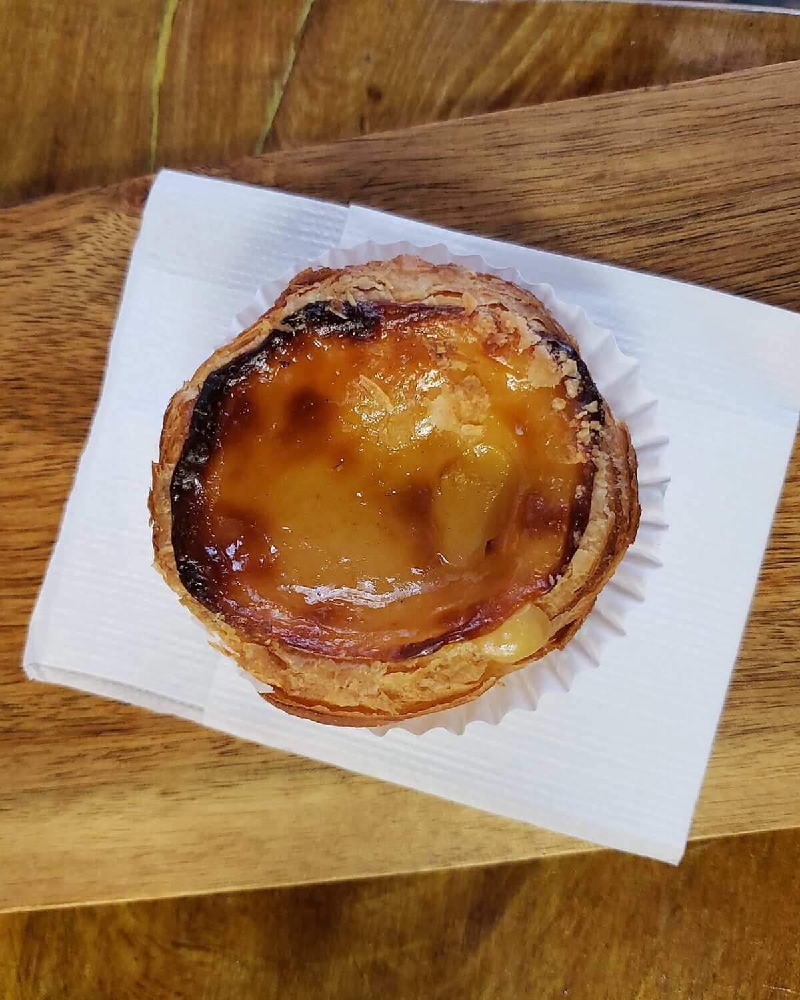
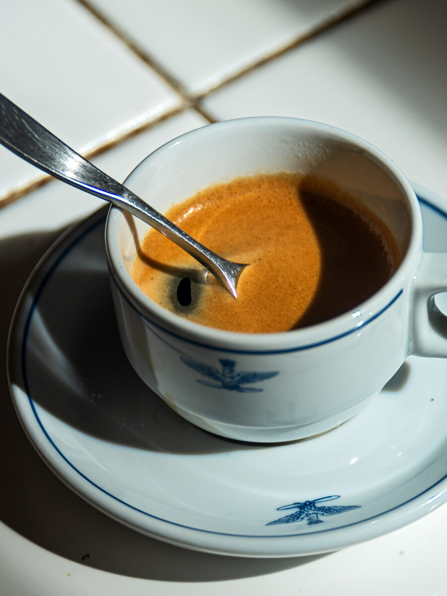
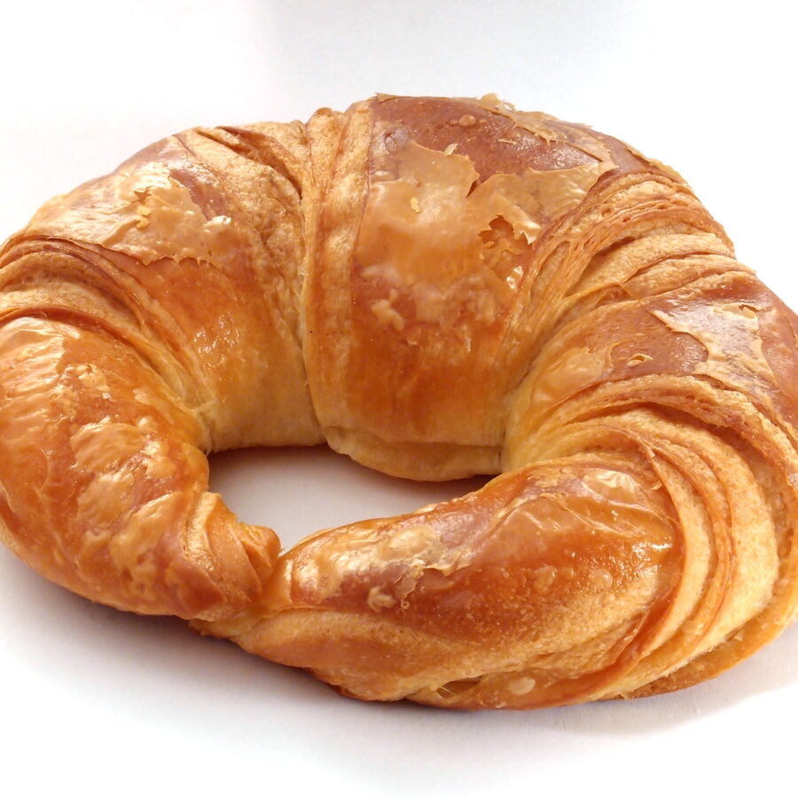
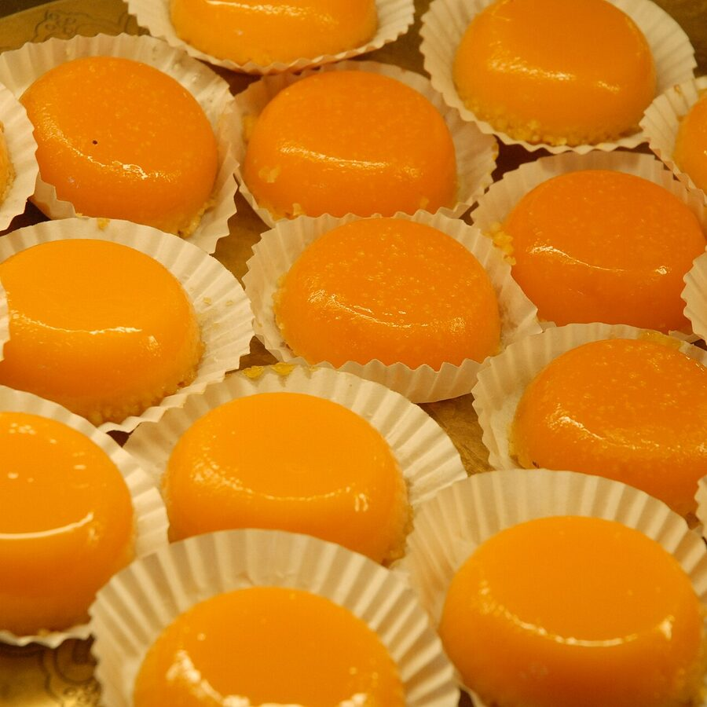
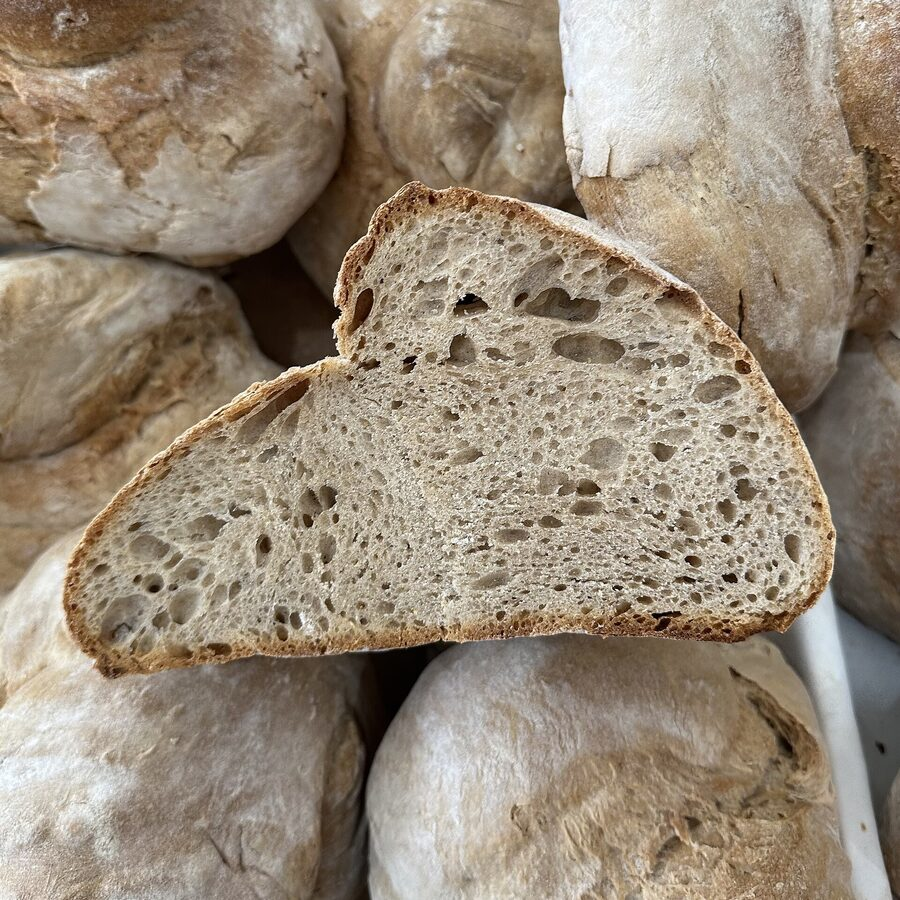
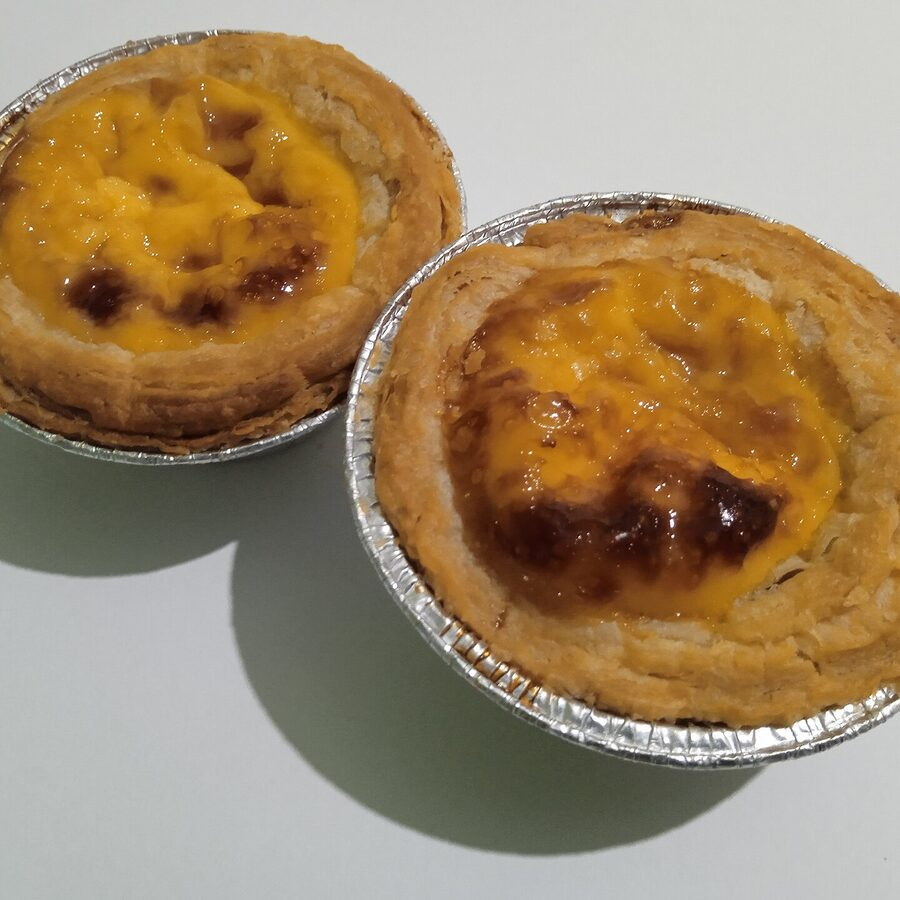
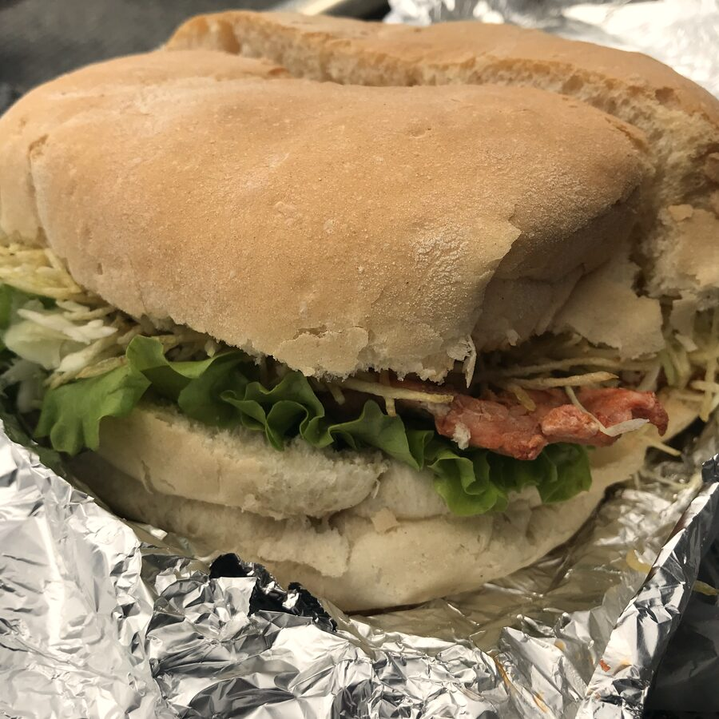

Portuguese bakery & café · La Jonction, Geneva
Portugal, made by hand — in La Jonction.
Bifanas, pastéis de nata, fresh bread and coffee: since the late 1990s, a warm, family-run Portuguese bakery-café in the heart of Geneva — eat in or take away.

Our story
A neighbourhood spot, family-run since ~1999
Chez Martins is a small, family-run Portuguese neighbourhood bakery-café, on Rue des Deux-Ponts since the late 1990s.
People come for the bifanas, the pastéis de nata, the fresh bread and the coffee — and for the warm welcome of a family that greets its regulars with a smile. Unpretentious, a stone's throw from the Queue-d'Arve.
An everyday address built for takeaway: a coffee and a pastry in the morning, a sandwich or a bifana at noon. A member of the ABCGE.
- Home-made bifanas
- Pastéis de nata
- Fresh bread daily
- Counter coffee
- Takeaway
- Family-run
- ABCGE member



In pictures



Contact
Drop by, or send us a message
A question, a special order, a kind word? Give us a call, or leave a message below.
Reviews
What food-lovers say
A 4.4 out of 5 rating and 120+ reviews on Google.
- 4.4 / 5 · 123 Google reviews
- 🥖 The bifana, a firm favourite
- 👋 A family welcome, since ~1999
The bifanas are TOP.
Warm welcome, friendly atmosphere, delicious bifanas and very well located!
Always a pleasure to come back. Always warmly received, with the smile and kindness of this lovely family.
Find us
In the heart of La Jonction
Contact
+41 22 320 76 21Good to know
A neighbourhood spot built for takeaway, though you can also grab a coffee at the counter. Tuesday-to-Thursday hours may vary — a quick phone call before you come is safest.
| Monday | Closed |
|---|---|
| Tuesday | 06:00–16:00 |
| Wednesday | 06:00–16:00 |
| Thursday | 06:00–16:00 |
| Friday | 06:00–16:00 |
| Saturday | 07:00–16:00 |
| Sunday | 08:00–16:00 |